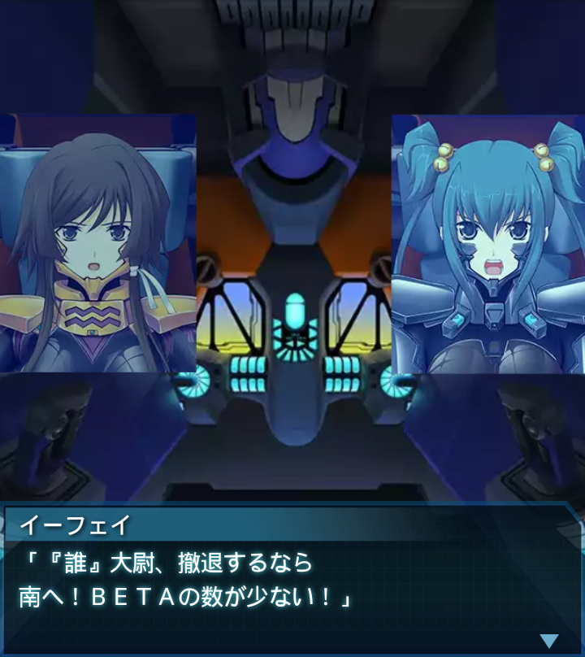

篁唯依
「お待ちしていました！大尉！ご無事で何よりです！」

『誰』
「ファング中隊こそ、よく俺達の帰り道を確保してくれた。
感謝する！」
『誰』
「残存ＢＥＴＡの殲滅を！…と言いたいところだが、この数は
さすがに対処しきれないな」
イーフェイ
「残弾は残り少ないし、戦闘継続は困難よ！撤退しましょう！」
イーフェイ
「後はアフリカ連合に任せればいい！彼等なら喜んで施設を粉々に
するでしょうよ！」
篁唯依
「そんな事ができるか！今アフリカ連合軍を置いて行けば、彼等が
全滅してしまうのは明らかだ！」
篁唯依
「噂の独り歩きを恐れ、研究施設の事を隠蔽していたのは上層部だ！
前線で戦う彼等に罪は無い！」
篁唯依
「ましてや、その愚策の尻ぬぐいに差し出された者達だぞ！
ここで死なせる訳にいくかっ！」
『誰』
「篁中尉、ここで俺達が斃れる事は人類の命運に直結する。
冷静になれ！」
篁唯依
「ッ！！」
イーフェイ
「『誰』大尉、撤退するなら南へ！ＢＥＴＡの数が少ない！」
『誰』
「了解！バオフェン中隊は、小破状態の崔機を援護しつつ、
先行しろ！」
『誰』
「殿は俺達とファング中隊が努める！やれるかファング１！？」
篁唯依
「――了解、やれます」『誰』
「よし、行けッ！バオフェン１！」